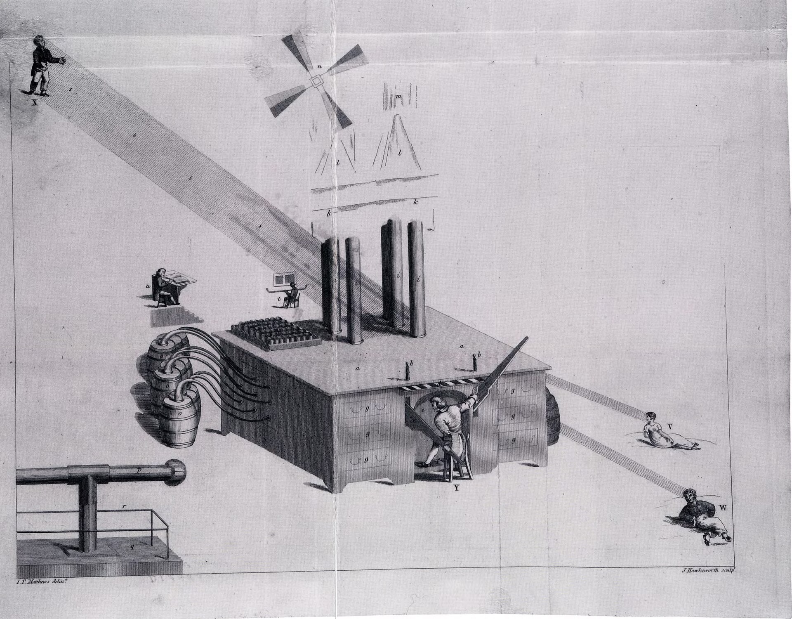
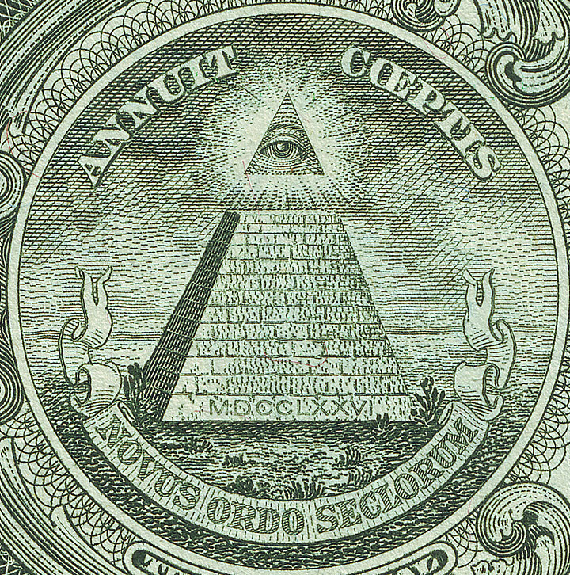

“Those who can make you believe absurdities can make you commit atrocities.”attributed to Voltaire
At about three in the afternoon on the 4th of December, 2016, a twenty-eight-year-old father of two named Edgar Maddison Welch walked into a small pizza restaurant in north-western Washington, D.C., called Comet Ping Pong, carrying an AR-15 rifle, a .38 revolver, and a folding knife. The restaurant was a popular weekend lunch spot; there were families with children inside. Welch had driven six hours from his home in Salisbury, North Carolina to be there. He had told his housemate, before leaving, that he was going to “save the kids.” He fired three rounds inside the restaurant — thankfully, no one was hit — and searched the premises for the underground tunnels in which, on a story circulating online in the weeks before the U.S. presidential election, a senior politician was said to be running a child-trafficking ring out of the pizzeria’s basement. Comet Ping Pong, as he had time to discover before his arrest, had no basement.1
What is worth pausing on, in the news reports of the following days, is not the gun. It is what the press could not quite make sense of: that Edgar Welch was, by every personal measure, a thoughtful and decent man. His pastor described him as a sincere Christian. His employer described him as reliable. His family described him as a careful father. The court psychologist who examined him reported no major psychiatric illness. He had, in good faith, watched a number of online videos in the weeks before, found them persuasive, prayed about it, and concluded that he was being called by his conscience to act. He was not a fool, and he was not mentally ill. He was a normally functioning adult human being who had become certain of something that was not true.
This chapter is about how that happens. Because Welch is, in this respect, an unusually striking but not in any deep way unusual case. The conspiratorial mind is not a defect; it is the standard equipment of a healthy human being under particular epistemic and social conditions. The Roman senate of 63 BCE believed Catiline was conspiring to overthrow the republic (he was, mostly); the Knights Templar were tortured into confessing a conspiracy that historians now find largely fabricated by Philip the Fair of France (1307); the 1797 panic about the Bavarian Illuminati alleged a secret society directing the French Revolution from Ingolstadt (it had been dissolved by the time of the panic); the 1903 Protocols of the Elders of Zion, fabricated by the Tsar’s secret police, would be cited by murderers from the Black Hundreds of Odessa to the architects of the Final Solution. Conspiracy thinking is not a modern aberration. It is a recurring human pattern of which our century has produced a particularly visible specimen.
By the end of the chapter you will know what mechanisms produce the pattern, what real conspiracies look like and how they differ from the imagined ones, how the worst harms grow, and what little is known about how anyone is ever talked back from the edge. The first thing to say, and we say it as firmly as we can, is that treating conspiracy believers as stupid is a category error. They are running standard human cognition in conditions that reliably produce the outcome. Most of us, given the same conditions, would arrive at the same place. The right question is not how they got there. It is how any of us has stayed away.
Edgar Welch was not a fool, and he was not mentally ill. He was a normally functioning adult who had, in good faith, become certain of something that was not true.
The LineageThe Paranoid Style
The classic essay on this subject is Richard Hofstadter’s The Paranoid Style in American Politics, written in 1964 in the long shadow of Joseph McCarthy’s anti-communist witch hunts. Hofstadter argued, with examples reaching back to the American founding, that there is a recurring style of political thought — not a school, not a party, but a style — characterised by the conviction that history is the work of vast, malevolent, and competent conspiracies; that the perceived enemy is not just wrong but actively evil; that the conspirators are unusually well organised, with a single mind and a single purpose; and that the situation is always near-final, requiring decisive action now. The paranoid style, Hofstadter emphasised, is not the same as being clinically paranoid. It is a recognisable rhetorical and cognitive pattern that ordinary politicians and movements adopt, and it has been adopted by both ends of the political spectrum at various points in American history. He traced it through the 1798 anti-Illuminati panic, the Anti-Masonic movement of the 1820s, the nativist movements of the mid-nineteenth century, the Populist tracts of the 1890s, McCarthyism, and the Goldwater right of his own moment. He could not have anticipated QAnon, but the structure he described would have been entirely familiar to him.2
The deep pattern has older roots still. The historian Norman Cohn, in his great book Warrant for Genocide, traced the conspiratorial structure of antisemitic thought from medieval blood-libel accusations through the Protocols of the Elders of Zion to the propaganda of the Third Reich, and showed that the same essential narrative — a hidden, organised group running events from behind the scenes — was being reproduced, with new villains, by successive movements over more than seven hundred years.3 The witch-hunts of the early modern period, which we examined in another chapter of this volume, run on the same template. So, in their way, do the modern conspiracy movements that allege a global cabal of bankers, of paedophiles, of vaccine manufacturers, of immigrants, of communists, of capitalists. The cast varies. The plot does not.
An Early Case StudyJames Tilly Matthews and the Air Loom
To see the structure of conspiratorial thought rendered with extraordinary clarity by a single mind, look at the case of James Tilly Matthews. Matthews was a London tea broker who, in the 1790s, became convinced that he had been chosen as an emissary to negotiate peace between France and revolutionary Britain. He travelled to Paris, was imprisoned by the Jacobins, and returned to England a changed man. By 1797 he was loudly accusing the British Home Secretary of treason in the House of Commons, and was, on his family’s urgent petition, committed to Bethlem Royal Hospital. He would remain there for the rest of his life.4
In Bedlam, Matthews described to the apothecary John Haslam, in patient and elaborate detail, the conspiracy that he believed was directed against him. A small gang of seven trained operators — whom he knew by name: Bill the King, Jack the Schoolmaster, Sir Archy, the Glove Woman, others — were located in a cellar near London Wall, where they operated a complex machine they called the Air Loom. The machine ran on a mixture of foul vapours, magnetism, and unseen rays, and it was used to control the minds of public men, to torment Matthews himself with sensations and forced thoughts, and to direct the political affairs of Britain from a hidden lever. Matthews supplied Haslam with names, motives, schedules of operation, and the technical principles of the device. Then he drew the machine.

Haslam published the diagram, along with his own running commentary, in 1810 in a book called Illustrations of Madness — the first published case study of a single psychiatric patient’s delusional system. It was, and remains, an extraordinary document. The diagram is reproduced in modern psychiatry textbooks as the founding image of paranoid schizophrenia, with reason. But what is interesting for our purposes is that almost every structural feature of Matthews’s system is also a feature of modern non-clinical conspiracy thinking. The hidden small group; the technical mechanism by which they control events; the named adversaries; the personalised victimisation; the conviction that the public is being deceived; the careful, almost loving documentation. The difference between Matthews and a modern Pizzagate believer is not the structure of the belief. The difference is that Matthews was psychotic and the modern believer, in most cases, is not.
What this tells us, and it is sobering, is that the architecture of paranoid thought is not invented from scratch by mental illness. It is a stable possibility of the human mind, available to a healthy nervous system under the right conditions, and rendered with full clinical clarity when illness happens to push that healthy structure all the way into a person’s sole reality. When we now meet a sincere QAnon believer, we are not meeting a different species. We are meeting a person in whom the same architecture is being supplied, today, by social-media feeds rather than schizophrenia.
The MechanismsWhy the Mind Wants a Cabal
Why does the mind reach for hidden agents as the explanation of consequential events? The honest list of mechanisms is small, well documented, and recurs in every modern review of the literature.
The mechanism we treated at length in Chapter One. The mind that detects a tiger in the rustle also detects a hand behind the assassination, the pandemic, the election. Big events with diffuse causes feel unsatisfying. The mind wants a someone responsible. Conspiracy supplies the someone.5
People consistently match the perceived size of a cause to the perceived size of an effect. A lone disturbed man in the Texas Book Depository feels insufficient to have killed President Kennedy; a global pandemic feels insufficient to have begun in a single Wuhan market; the September 11 attacks feel too large to have been arranged by nineteen amateur hijackers. Conspiracy supplies the missing largeness. This is one of the strongest single predictors of conspiratorial belief, demonstrated in multiple experimental studies: tell people the same act was committed by the President versus a private citizen, and they report higher conspiratorial belief about the President.6
The same machinery that lets us recognise the friend across a crowded street produces, when run against a sufficiently large information stream, spurious correlations. The number 23 appears in many places (it appears in many places by chance, in an alphabet of finite numbers and a world of finite stories), and the believer registers each appearance as evidence of a pattern that the universe is trying to tell them. The internet provides, for the first time in history, a noise stream of effectively infinite size on which any chosen pattern can be made to fit.7
People reason their way to conclusions their tribe already holds, not because they are dishonest but because the alternative — arriving at a belief that would mark them out as a traitor to the community that has cared for them — is socially and emotionally costly. Dan Kahan’s work has shown this elegantly: high-numeracy subjects on both sides of the political spectrum reason worse, not better, when the same statistical problem is framed in a way that the right answer threatens their group’s position.8 Conspiracy belief is, in this respect, often less about epistemic failure than about social loyalty.
What is rarely noticed in commentary on conspiracy movements is how socially generous they often are to new members. A person who has felt unheard, ignored, or condescended to by mainstream institutions finds, in the conspiracy community, an explanation for their alienation (they wanted you ignored), a community of people who take them seriously, a vocabulary in which their suspicion is wisdom rather than ignorance, and a daily sense of purpose. You do not lose friends when you join a conspiracy movement; you make new ones who recognise the secret world you can now also see. The cost of leaving is, accordingly, the cost of also losing that community. This is one reason confrontational debunking rarely works.9
The modern social-media platform supplies, by design, an unending stream of content optimised for engagement — that is, optimised for the emotional responses that keep the user looking. Outrage, fear, certainty, and pattern-recognition all produce strong engagement; the algorithm thus delivers, to the curious viewer of one mild conspiracy video, a steadily more extreme sequence of follow-ups. The well-documented “rabbit hole” effect is not an accident; it is the predictable output of an optimisation function trained to keep the user on the platform.10 A century ago a person had to seek out the back-of-the-shop pamphlets of the John Birch Society. Today a person who watched a single five-minute video gets the rest delivered to their bedside.
A Case Study in MiniatureThe Eye on the Dollar Bill

To see, in miniature, the structure of how a real artefact gets enlisted into a wrong theory, look at the back of any United States one-dollar bill. The unfinished pyramid surmounted by the all-seeing eye is, in much of the modern Anglophone conspiracy literature, the central proof of the “Masonic founding” of the American republic and, in the more lurid versions, of the continuing Illuminati control of the United States Treasury. The image is real. The reading is wrong.
The historical facts are as follows. The Great Seal of the United States was designed in 1782, after considerable debate, by a series of committees of the Continental Congress. The Eye of Providence above the pyramid was suggested by the artist Pierre Eugène du Simitière, whose other designs were not used; the eye itself is a Christian iconographic motif with antecedents that predate Freemasonry by more than a thousand years, found in Egyptian, Buddhist, and Renaissance Christian art. The unfinished pyramid is a separate device, suggested by a different committee member, representing strength, duration, and the unfinished work of the new republic. The two were combined into a single allegorical scene. Of the founders involved, exactly one was a known Mason (Benjamin Franklin), and there is no record of him objecting to or championing the design. The reverse of the seal was used hardly at all for the next 150 years.11
In 1935, in the depths of the Great Depression, Franklin Roosevelt’s Treasury Secretary Henry Morgenthau redesigned the one-dollar bill to include both sides of the Great Seal — both Morgenthau and Roosevelt were Masons, which is true, and which the conspiracy literature has used ever since. The motive on the contemporary record, however, was that the unfinished pyramid (Annuit Cœptis, “He has favoured our undertakings”; Novus Ordo Seclorum, “A new order of the ages”) seemed to Roosevelt a fitting symbol for the New Deal — the unfinished work of restoring the country. The bill design was approved by Roosevelt personally; the contemporary discussion is in the Treasury archives.
This is the pattern. A real image; a real history; a real (Masonic) presence among some of the actors; and an elaborate conspiratorial reading constructed long after the fact, in which the eye is the gateway to a global cabal. The reading is not refutable by pointing to any single contrary fact, because the believer has already incorporated the contrary facts into the system — of course they want you to think it was just iconography. Of course the official archive supports the boring story. Of course Morgenthau gave the boring motive on the record. The conspiracy survives by absorbing its disconfirmations into its proof.
The HarmWhat Conspiracies Cost in Lives
It is tempting to treat conspiracy belief as a colourful eccentricity of human cognition. The historical record will not let us.
The Protocols of the Elders of Zion, fabricated in 1903, were cited by the Black Hundreds in pogroms across Imperial Russia; in Nazi propaganda from the 1920s on; on the Iranian state broadcast network in our own decade. Norman Cohn called them, with reason, a warrant for genocide. The witch-craft accusations of the early modern period killed somewhere between thirty and sixty thousand people, overwhelmingly women, between roughly 1450 and 1750. McCarthyism ended careers, marriages, and a small number of lives across the United States in the 1950s; the Hollywood blacklist destroyed sectors of an industry. The HIV/AIDS denial movement in South Africa, embraced by President Thabo Mbeki between 2000 and 2005, prevented the rollout of antiretroviral drugs and is estimated by a Harvard School of Public Health study to have caused, conservatively, three hundred thousand preventable deaths.12 The modern anti-vaccine movement, taken together with the COVID misinformation environment, has had a measurable mortality cost in the United States and elsewhere, in some estimates running into the hundreds of thousands.13 Pizzagate had no fatalities only because Edgar Welch happened to be a careful shot. QAnon-associated violence has produced fatalities. The 6th of January 2021 happened.
None of this is academic. The history of conspiracy belief, traced honestly, is one of the larger histories of unnecessary death in modern times. To treat it as a quaint cognitive quirk would be to miss one of the most important social-psychological problems of the twenty-first century.
The Objection That Matters“But Some Conspiracies Are Real”
This is the strongest objection, and the honest reader will already have raised it. You are right that the Protocols were fabricated and Pizzagate was nonsense. But Watergate was real. The Iran-Contra affair was real. MK-ULTRA was real. The Tuskegee syphilis study was real. The tobacco industry did, in fact, suppress its own internal cancer research for decades. The opioid industry did, in fact, knowingly mislead about the addictiveness of its products. Sometimes — often — the world really is run by hidden actors against the interests of the public. By the standard you are using, every actual whistleblower would be a conspiracy theorist. How do you tell the difference?
This is a serious objection. The honest answer is that real conspiracies and conspiracy-theoretic thinking have, on careful inspection, sharply different epistemic profiles, and you can usually tell them apart by looking at four features.
Real conspiracies are small, time-limited, and bounded. Watergate involved a few dozen people across a few years. MK-ULTRA was a CIA programme of a defined size with a defined timeline. Even the largest real conspiracies (the Manhattan Project, the Iran-Contra arrangements) involve perhaps a few hundred people and last for years, not generations. Mass conspiracies in the conspiracist sense — in which thousands of people across decades and across institutions maintain perfect silence on the central deception — are not the kind of thing humans, with their leaks and resentments and conscience-attacks, have ever historically been able to do. The vaccine industry, with millions of employees globally, does not have an undisclosed agenda about heart attacks for the same reason no actual company of even three hundred people keeps any secret long.
Real conspiracies eventually get exposed by ordinary journalism. Watergate was exposed by two newspaper reporters working sources. Tuskegee by a single Associated Press story. MK-ULTRA by a Senate committee. The mechanism is not heroic individual researchers piecing together patterns the establishment refuses to see; it is, in almost every case, ordinary professional journalism doing its job. When a putative “conspiracy” has been suspected for years and not surfaced through any official investigative process, that is evidence (not proof, but evidence) that it is the kind of thing not happening.
Real conspiracies are unmasked by single discoveries that change the picture. A single document, a single tape, a single defector flips the case. Conspiracy theories, by contrast, are notable for never quite being settled by any single piece of evidence; new evidence is always reinterpreted, contrary evidence is always shown to be planted, the central allegation is never refutable. The first sort can be falsified. The second cannot. Karl Popper’s old criterion applies here with full force.14
Real conspiracies have limited, specifiable goals; conspiracy theories have totalising ones. Watergate was about influencing one election. MK-ULTRA was about wartime interrogation. The opioid industry’s misconduct was about quarterly earnings. The conspiratorial worldview, by contrast, names an enemy that controls everything, has been controlling it for centuries, and could not be defeated by anything short of revelation. The difference between the two should be visible to a careful reader within the first paragraph.
None of this means real conspiracies are rare. They are not. They are also not what the believer is talking about when they speak of the conspiracy. There is a category difference, and the conscientious reader has the right to insist on it.
What HelpsThe Slow Work of Doubt
The literature on talking conspiracy believers down is honestly humbling. The most consistent finding is that direct refutation does not work and frequently worsens commitment, through a mechanism called the backfire effect: confronted with disconfirming evidence by a perceived opponent, the believer often emerges from the conversation more certain, not less.15 Mocking does not work, and produces, in addition to no change of belief, justified resentment. Cutting off relationships does not work, and removes the only social pull that might, eventually, balance the pull of the conspiracy community.
The interventions that do show modest effect are slow and relational. Sustained, respectful conversation with a person whom the believer trusts, who does not threaten their dignity, and who is willing to lose the argument on individual points while keeping the relationship intact, is in some cases sufficient to reopen doubt. Pre-emptive “inoculation” — exposing people to the rhetorical techniques of conspiracy content (the cherry-picked evidence, the impossible standard of proof, the strategic vagueness about the supposed conspirators) before they encounter the content itself — has shown promising effects in lab settings and is being trialled at scale by some platforms.16 Restoring trust in mainstream institutions — doctors, scientists, journalists — would help, but these institutions have to earn that trust by being trustworthy, and the years in which they have not been have left a real residue.
The hardest and most honest thing to say is that the work of de-radicalisation, where it has succeeded, has rarely succeeded through argument. It has succeeded through life events: a new relationship; a job that requires daily contact with the demonised group; a death in the family that broke through to feeling rather than ideology; in some cases simply the slow exhaustion of having no fellow believers left in the room. The fast mind that built the conspiracy does not get reasoned out of it. The slow mind, in time, sometimes does.
“Why do intelligent people believe demonstrably wrong things?”
After Pizzagate, January 6th, and a decade of disinformation, six honest answers.
“Hyperactive agency detection from Chapter One, proportionality bias, apophenia, identity-protective cognition. Every mechanism is normal; the failure mode is built in. The interesting question is no longer why some people fall in but why the rest of us stay out, and the answer is mostly luck of environment and the friends we happen to keep.”
“James Tilly Matthews could have written the QAnon Q-drops. The architecture is the same. What separates the schizophrenic patient from the conspiracy-community member is mostly that the patient has the architecture imposed by illness while the believer has it supplied by a social environment. In neither case is mockery a treatment.”
“You will not understand conspiracy movements until you understand what they give. They give a person who felt unheard a community that listens; a person who felt powerless a story in which they have a heroic role; a person who felt looked down on a worldview in which they know things others do not. Take those goods away by argument and you have given them nothing in exchange.”
“Hofstadter wrote in 1964 and could be quoted line-for-line in 2026. Cohn traced the same structure back seven hundred years. We are not living through a peculiar new madness. We are living through one more episode of an old pattern, made more visible by the new technologies of distribution, and likely to be followed by another after this one.”
“Be careful with the symmetry. Some conspiracies are real, and lazy use of the word conspiracy theorist has shielded actual abuses of power from the scrutiny they deserved. The honest position is that we have to do the slow, unsexy work of distinguishing real allegations from unfalsifiable ones, every time, case by case, instead of using the label as a shortcut.”
“Behind every conspiratorial certainty is a person who was not given a sufficient account of the world they were born into. Mocking them is the cheapest possible response. The harder work, and the only response that has ever changed anyone, is to take the alienation that drove them to the conspiracy seriously, and to offer the slower, less satisfying truth as if it could meet the longing the conspiracy almost meets.”
Myth vs. RealitySetting the Record Straight
What Is Often Said
“People who believe in conspiracy theories are uneducated, mentally ill, or just stupid. The internet has produced a new kind of madness; it would not exist in a more rational time. Confronting believers with facts is the right response, and education is the cure.”
What the Evidence Shows
Conspiracy belief is found at every educational level, in healthy non-psychotic populations, and is produced by normal human cognition (HADD, proportionality bias, apophenia, identity-protective cognition) in particular social conditions (alienation, distrust of institutions, community of belonging, algorithmic amplification). The pattern is centuries old; the internet is amplifier, not source. Direct refutation often backfires. The interventions that work are slow, relational, and respect the dignity of the believer.
The literature on de-radicalisation is younger than its urgency would suggest, and many findings — the backfire effect itself, the strength of certain inoculation interventions — have shown mixed replication. The harm estimates from misinformation events are honest mid-points, not certainties. The category line between “real conspiracy” and “conspiracy theory” we drew above is a working heuristic, not a sharp metaphysical boundary; cases at the edge will always be contested, and a thoughtful person reserves judgement on them. None of this softens the core finding: the conspiratorial pattern is real, recurrent, and consequential, and treating it as merely a cognitive failure is to miss its social and political nature.
The lines worth carrying out of this chapter.
- The conspiratorial mind is not a defect. It is the standard equipment of a healthy human under particular epistemic and social conditions. Treating believers as stupid is a category error.
- The architecture is ancient and stable. James Tilly Matthews’s 1810 Air Loom has the same structure as a 2025 QAnon drop. The cast varies; the plot does not.
- Six mechanisms reliably produce the pattern — hyperactive agency detection, proportionality bias, apophenia, identity-protective cognition, the community of belonging, and the recommendation algorithm. None is exotic. All are present in your own brain.
- Real conspiracies look different from conspiracy theories. They are small, time-limited, eventually exposed by ordinary journalism, falsifiable by single discoveries, and have specifiable goals. Lazy use of the label as a shortcut has shielded real abuses from real scrutiny.
- The harm is not academic. The Protocols, the witch trials, McCarthyism, HIV denialism in South Africa, anti-vaccine deaths, January 6th — conspiracy belief has a body count, and the work of reducing it is one of the more important civic problems of our century.
- What helps is relational and slow. Direct refutation backfires; mockery destroys the only pull that might have worked; sustained, respectful relationships with people whose dignity is not threatened sometimes do.
If you keep one sentence: the conspiracy almost always meets a real need that the truth, told contemptuously, never could — and the only honourable response is to take the need seriously and to offer the slower, harder truth as if it could meet it too.
Research ReferencesSources & Notes
- ReferenceWelch v. United States; FBI affidavit and court records, December 2016. Press coverage in The Washington Post and The New York Times, 4–5 December 2016.
- HistoryHofstadter, R., The Paranoid Style in American Politics, and Other Essays (1965); the title essay first appeared in Harper’s, November 1964.
- HistoryCohn, N., Warrant for Genocide: The Myth of the Jewish World-Conspiracy and the Protocols of the Elders of Zion (1967).
- ReferenceHaslam, J., Illustrations of Madness: Exhibiting a Singular Case of Insanity, and a No Less Remarkable Difference in Medical Opinion (London, 1810); modern critical edition with introduction by Roy Porter (1988). Jay, M., The Influencing Machine (2003) is the standard modern biography of Matthews.
- ScienceThe HADD reference is to Chapter One of this volume; for the conspiracy application, see van Prooijen, J.-W. & van Vugt, M., “Conspiracy theories: evolved functions and psychological mechanisms,” Perspectives on Psychological Science (2018).
- ScienceLeBoeuf, R. A. & Norton, M. I., “Consequence-cause matching: looking to the consequences of events to infer their causes,” Journal of Consumer Research (2012); Leman, P. J. & Cinnirella, M., on proportionality bias and conspiracy.
- ReferenceOn apophenia generally: Brugger, P., “From haunted brain to haunted science,” in J. Houran & R. Lange (eds), Hauntings and Poltergeists (2001).
- ScienceKahan, D. M., “Ideology, motivated reasoning, and cognitive reflection,” Judgment and Decision Making (2013); and Kahan et al., “Motivated numeracy and enlightened self-government,” Behavioural Public Policy (2017).
- ReferenceOn conspiracy communities as belonging structures: Berger, J. M., Extremism (2018); Marwick, A. & Lewis, R., Media Manipulation and Disinformation Online (Data & Society, 2017).
- DebatedTufekci, Z., “YouTube, the great radicalizer,” The New York Times (10 March 2018); subsequent quantitative work by Hosseinmardi et al. (2021) gave a more mixed picture of YouTube’s recommendation effects, but the rabbit-hole effect on TikTok and other shorter-form platforms remains well-documented.
- HistoryPatterson, R. S. & Dougall, R., The Eagle and the Shield: A History of the Great Seal of the United States (U.S. Department of State, 1976).
- ScienceChigwedere, P., Seage, G. R., Gruskin, S., Lee, T.-H. & Essex, M., “Estimating the lost benefits of antiretroviral drug use in South Africa,” Journal of Acquired Immune Deficiency Syndromes (2008).
- DebatedModelled mortality costs of COVID misinformation: KFF, Lancet Commission, and Kaiser Family Foundation analyses (2021–2023). Estimates vary widely; the lower bounds are conservative; the order of magnitude is hundreds of thousands of preventable deaths in the United States alone.
- ReferencePopper, K., The Open Society and Its Enemies (1945), and Conjectures and Refutations (1963) — the falsifiability criterion.
- DebatedThe classic Nyhan & Reifler “backfire effect” studies (2010) have had mixed subsequent replication; the more careful current literature suggests confrontation is at minimum unproductive and sometimes counterproductive, depending on context.
- ScienceRoozenbeek, J. & van der Linden, S., “Fake news game confers psychological resistance against online misinformation,” Palgrave Communications (2019); follow-up work on inoculation at scale.
Citations support the science presented; a production edition would carry full bibliographic detail and DOIs, externally verified.
Going FurtherRecommended Books
Read
- Richard Hofstadter, The Paranoid Style in American Politics (1965)
- Norman Cohn, Warrant for Genocide (1967)
- Mike Jay, The Influencing Machine: James Tilly Matthews and the Air Loom (2003)
- Kathryn S. Olmsted, Real Enemies: Conspiracy Theories and American Democracy (2009)
- Jonathan Kay, Among the Truthers (2011)
- Anna Merlan, Republic of Lies (2019)
Watch & Listen
- Reporting on QAnon by NBC News, The Guardian, and the QAnon Anonymous podcast (with reasonable care for the platforming question)
- Documentaries on Pizzagate, the 6th of January, and on South African HIV denialism
- Dan Kahan’s talks on motivated reasoning